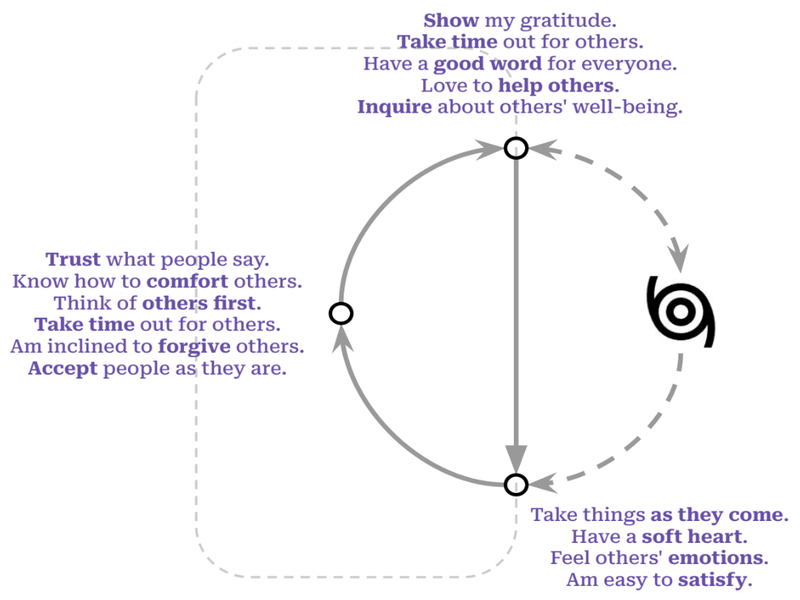

Who am I?
A Little World in Motion
“I am a little world made cunningly / Of elements and an angelic sprite” writes John Donne,2 gesturing toward our smallness and our vastness, our physicality and what is intangible in us. Even that intangible part of us seems to be composed of reflections: 3 though there is one reality, we each walk around in our “own worlds” and participate in each others’ “worlds”.
Many great traditions have addressed this question. Our daily round, circulating between inner and outer worlds, is a dance that has been depicted by philosophies and religions across cultures and ages: Atman and Brahman4, the knower and the known, I and Thou,5 the individual soul and the Empyrean6.
It is founded in our biology, our bodies. In A Foray into the Worlds of Animals and Humans, Jakob von Uexküll7 describes how the internal world of any organism, including humans, is made up. He names this subjective world an Umwelt (surroundworld) since it is focused outward, created and reshaped by each of us when we interact with reality. A simple picture shows how it works in action:

Each person unites the inner and outer world. The beauty of the Umwelt model is that it explains a lot, and simply. It pares down the bewildering array of experience into two realms: inside of me, and outside of me. In it, all experiences are shown as pathways between the inner world and outer reality: the narrow routes by which we sense the outer world (coming in), and by which we affect it (going out).
We grow in place, within limits. Staggering and complex as our experiences are, they move through us along this pathway. But the path is not a closed circle, endlessly playing the same loop over and over again: it’s more like a spiral. The world changes, and calls me to change. Sunsets may be the same as when I was a kid, but I sense them differently. I change myself, and even the ungovernable world, a little bit at a time.
We can grow into beauty, or diminish. The spiral, that elegant fusion of circle and line, acknowledges repetition while allowing transformation. And it’s worth noting that I can change for better or for worse, and we acknowledge this when we talk about a vicious cycle (or its more recent sibling, the virtuous cycle).8 A spiral is vicious when it closes me off into an inner world which becomes antagonistic to others. It is virtuous when it beckons me out to gather and learn from the world beyond, in order to share with others.
I have a choice of how I grow. The world rushes in and I have a choice, moment-by-moment, day-after-day. The process is difficult, and sometimes tedious, but it has real implications. And if a little change is possible each time I move through this cycle, then a question presents itself: what is the shape I want to make?
What are some of the the shapes that other people trace as they experience the world, make choices, and act on them?
Same Differences
No one else has the same story as me. Down to the spelling of my genetic code, I’m unique. But others’ stories resonate with me. Even my body is written with the same language as yours: we’re the same.
The collection of traits that my family, friends and colleagues recognize as ‘me’ describe patterns of interactions they’ve had with me. Those patterns are the various ways that I interact with the world, my own specific remix of the kinds of interactions that others have with the world.
We engage the world through patterns of action, called traits. Over time, people have classified the ways in which humans interact with the world, from the ancient models of the four humors9 or the triguna10 to modern neuropsychology. One of the more recent versions of this effort has resulted in trait models of personality.11 Beginning with the available stock of phrases available in our speech and writing, researchers have investigated whether the various descriptions we apply to each other can be distilled to a handful of common traits transcending cultures and languages. This way, descriptions such as “she is dutiful” and “she is diligent” and “she is detail-oriented” might all be seen as pointing to an underlying character trait of “conscientiousness.” A trait is a repeated pattern which guides how you interpret the flow of sensations and react to them. For example, if you typically react to the flow of sensations from a crowded party with enthusiasm, you’re engaging a trait we call extroversion. If you shy away from asserting yourself at the party, you’re exhibiting the flip side of that trait (i.e. introversion).
For all our differences, our underlying traits align across a few dimensions. Generations of researchers have located five or maybe six basic dimensions which explain the incredible variety of personalities that we encounter in others.12 Of course people are intricate, layering traits and weaving them to produce different resonances. Even more, these braided traits interact with different environments in different ways, leading to an infinite flowering of distinct persons. Each person is unique, yes, but our differences can be plotted across the same few dimensions, just as the plenitude of giraffes, tsunamis, books, and radiolarians all live within four observable dimensions of time and space.
Our personalities are rooted in our bodies. Of course, if our words point to something real about us, it would be strange if we couldn’t trace the presence of these attributes within the fabric of our bodies. As we have delved deeper, neurological studies13 have discovered relationships between our longstanding descriptions of ourselves, and the material ‘stuff’ which makes us up: the brain and other nerves that weave us together.
They have a spiral shape. Distilling personality traits all the way down, we find two basic tendencies: stability and plasticity.14 A motion which holds us together, and a motion that impels us to explore the world. A circle and a line.

The table above shows how these two tendencies play out across the five factors of personality, as well as the essential aspects15 which comprise those factors. There are many more descriptions clustered under each of these, but this list gives a sense of the space in which our temperaments situate themselves.
Traits as Tools
It’s important to hold onto these categories lightly. Keep in mind that the terms used here are fleeting, although they point to a more durable structure that underlies human persons. The accuracy of a specific word erodes as quickly as language and culture changes,16 and the specific labels used for these factors were plucked from a large array of similar terms.17 For that reason, it is helpful to understand the types of descriptions which underlie these higher level factors. Having a small set of shared terms is helpful to guide our discussion, but we need to remember that “a map is not the territory”18, and that “all models are wrong, [though] some are useful.”19 Reality cannot be reduced to the words and tools we use to approximate it.
I am not reducible to my traits. A downside of thinking about oneself as a bundle of traits is that it gives a false sense that these are fixed: that these traits “identify” me, or “add up to” me, rather than describing patterns of my interactions with the world. We may take some comfort in being part of a group, but this same consolation can make us feel justified in forming sects, dividing us unnecessarily from others. “Extroverts can’t don’t understand us: they’re just wired differently.” Similarly, a trait can easily become an excuse, if we see it as inflexible: “I couldn’t possibly talk to that suffering person, I’m an introvert.” There’s a voice in us that objects to walls being set up arbitrarily,20 a voice that insists “I too am not a bit tamed, I too am untranslatable.”21
Traits are tools for navigating one’s relationship with the world.22 Each trait shapes our sense of the world, and provides us with tools to impact our environment. And we combine each trait with others, to form a comprehensive, complementary approach to the shifting situations we find ourselves in.23

Our tools shape us in return. Sensing the world in a way which is compassionate or curious engraves a particular shape in us.24 That engraved pattern, in turn, disposes us to see the world in certain ways: hopeful, manipulative, compassionate, etc. Once the pattern is engraved, it is self-reinforcing, so we must purposefully guide our traits if we want to change their course.25
One Among Many
But why would I want to change anyway? To find a place among others. Considering the question “who am I?” one hears that same question echoing in each person we encounter, building toward a collective question “Who are we?” Our little diagram above shows us as open-ended. We pour our actions into the world and we do not know how they will return. We are vulnerable to the world and this has led us to run, to seek shelter, and sometimes to venture sacrifices in hopes that the world will return what we pour into it. We are utterly dependent on the world outside of us and on each other.
A complete picture of me includes a picture of those around me. It seems silly just to draw my own traits circling around. They only make sense within the flowing ecosystem of others actions, perceptions and communications. After all, these surroundings formed me in the first place. The “outer world” is comprised of infinite inner worlds: each person in each car, at each subway stop, on each sidewalk; the inner worlds of spiders in a corner, of a mouse within your walls. If we zoom in on the storm of the outer world, it is actually a cloud of inner worlds; a cloud of perspectives that we will never be able to stand within, but which we honor nonetheless. My thoughts must bow to the reality of you, since “the best gesture of my brain is less than / your eyelids’ flutter which says / we are for each other.”26.
We are for each other.
As I think of who I am compared to who I want to be the domain of the social comes clearly into view. We are a social sort of creature, defining ourselves by our relationships and by where we fall within those relationships This is borne out in Henrique’s intra-personal circumplex and related work which underlines how crucial our social relationships are for our personal identity and if we are defined by our relationships then we are also undefined by them. That is to say, our relationships erode away any clear set of boundaries that we have any cell wall that we believe makes us into a distinct individual. Think of Pablo Neruda’s beautiful sonnet on love where he talks about long lovers who confuse each other’s hands for their own. Whose perceptions have become mingled because all of their guard has been let down. Relationships are our end, in multiple senses: both our goal and our undoing, which is why Dante has the dissolution of the ego occur in Paradisio